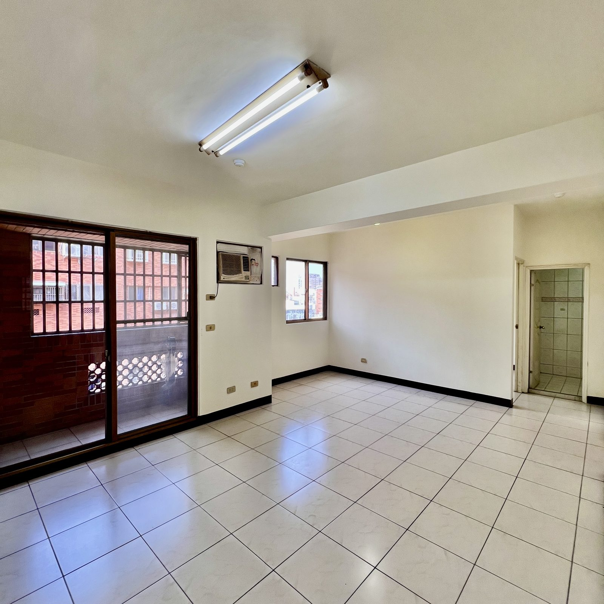

1 / 11房屋亮點
- 近林森國小
- 體育園區週邊
- 3房客變2大房
- 坡道平面車位
- 一手屋主產權單純
房屋資料
- 型態
- 電梯大樓
- 社區
- 北帝國3
- 格局
- 2房2廳1衛
- 屋齡
- 29 年
- 樓層
- 6/8
- 車位
- 坡道平面（B1），4 坪
- 管理費
- 1,580 元/月
- 使用分區
- 都市計畫住宅區
- 臨路
- 約 8 米
- 座向
- 座東南朝西北
- 位置
- 桃園市中壢區百韜二街
坪數說明
- 權狀坪數
- 32.66 坪（含車位）
- 主建物
- 19.59 坪
- 車位坪數
- 4 坪
- 土地坪數
- 5.71 坪
屋況特色
位在中壢後站體育園區週邊，走路就到林森國小，未來捷運站也在附近。
6 樓視野好、採光佳，社區門口 8 米路，車子進出方便。
- 電梯大樓，坡道平面車位在 B1
- 原本規劃 3 房，預售時建商客變成 2 大房，現況另有 1 間木隔間
- 一手屋主、沒有過度裝潢
- 社區有天然瓦斯，目前用瓦斯桶，需要自行申請裝錶
- 管理費每月 1,580 元，社區共 183 戶
買這間，錢要怎麼準備？
自備款（依銀行評估）約 202 萬
銀行評估可貸約 736 萬
每月房貸（30 年、2.2%）約 27,946 元
銀行貸款評估
- 台北富邦：首購可貸約 736 萬
- 目前銀行排隊約 3 個月